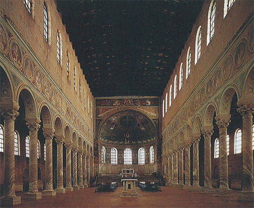
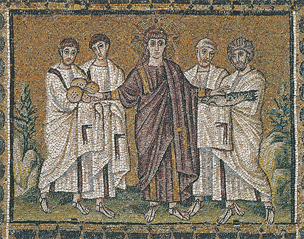
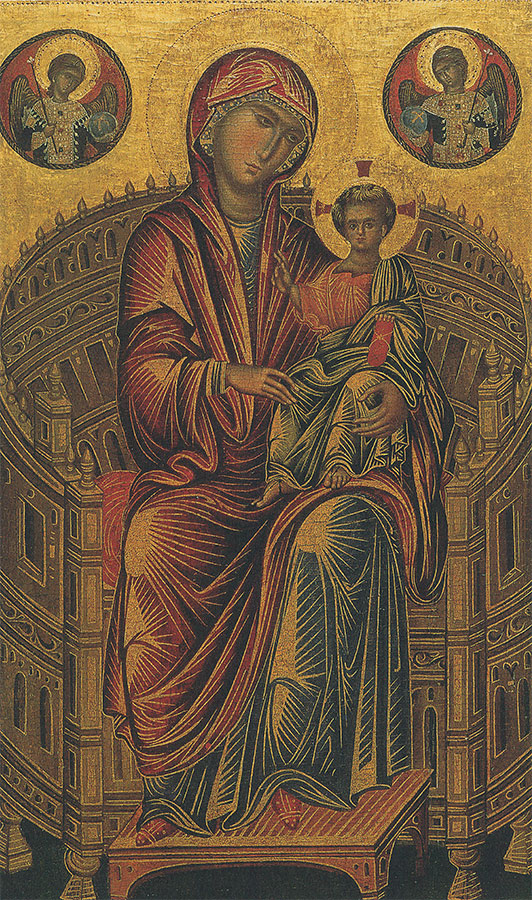
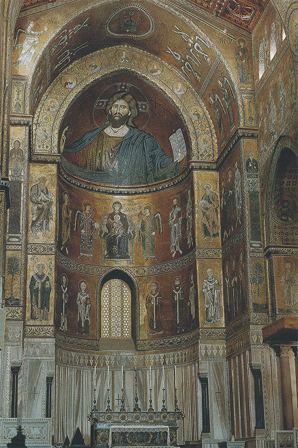
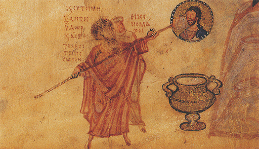

UNA DIVISIÓN DE CAMINOS
Roma y Bizancio, del siglo V al XIII
Cuando, en 311, el emperador Constantino estableció la Iglesia cristiana como religión del Estado, los problemas con los que se vio enfrentado fueron enormes. Durante los períodos de persecuciones no fue necesario, ni en realidad posible, construir lugares públicos para el culto. Las iglesias y locales de reunión que existían eran pequeños y recatados. Pero una vez que la Iglesia se convirtió en el mayor poder del reino, el conjunto de sus relaciones con el arte tuvo que plantearse de nuevo. Los lugares del culto no podían tomar por modelo los templos antiguos, puesto que sus funciones eran completamente distintas. El interior del templo no consistía, en general, sino en un pequeño altar para la estatua del Dios. Las procesiones y sacrificios se celebraban en el exterior. La iglesia, por el contrario, tenía que contar con espacio suficiente para toda la congregación de los fieles reunidos con el fin de escuchar la misa celebrada por el sacerdote en el gran altar, o el sermón pronunciado por éste. Por ello, las iglesias no tomaron como modelo los templos paganos, sino las grandes salas de reunión que en la época clásica habían sido conocidas con el nombre de basílicas, que aproximadamente quiere decir salas reales. Estas construcciones eran empleadas como mercados cubiertos y tribunales públicos de justicia, consistiendo principalmente en grandes salas oblongas, con estrechos y bajos compartimentos en las paredes laterales, separadas de la principal mediante hileras de columnas. En el extremo había con frecuencia un espacio para un estrado semicircular en el que el presidente de la asamblea, o el juez, tenía su asiento. La madre del emperador Constantino erigió una basílica semejante como primera gran iglesia, y, en lo sucesivo, la palabra se empleó para designar iglesias de este tipo. La hornacina o ábside semicircular sería empleado para el gran altar, hacia el que se dirigían las miradas de todos los fieles. Esta parte del edificio, donde se hallaba el altar, fue conocido con el nombre de coro. La sala principal o central, donde se congregaban los fieles, fue denominada después nave, mientras que los compartimentos más bajos de los laterales recibieron el nombre de alas. En la mayoría de las basílicas, la nave alta estaba sencillamente cubierta con techo de madera, dejando sus vigas al aire; en las laterales, el techo era generalmente liso. Las columnas que separaban la nave de los lados se decoraban con frecuencia suntuosamente. Ninguna de las basílicas primitivas se ha conservado tal como se la construyera, pero, a pesar de las alteraciones y renovaciones efectuadas en los mil quinientos años transcurridos desde entonces, aún podemos formarnos una idea del aspecto general de tales edificios (ilustración 86).

86 Basílica de S. Apollinare in Classe, Rávena, h. 530. Primitiva basílica cristiana.
El problema de cómo decorar estas basílicas fue uno de los más serios y difíciles, porque la cuestión de las imágenes y su empleo en religión se planteó de nuevo, provocando violentas disputas. En una cosa estaban de acuerdo casi todos los cristianos: no debía haber estatuas en la casa del Dios. Las estatuas eran demasiado parecidas a las imágenes talladas y a los odiosos ídolos que estaban condenados por la Biblia. Colocar la figura del Dios, o de uno de sus santos, sobre el altar era algo totalmente absurdo. ¿Cómo comprenderían los pobres paganos que acababan de convertirse a la nueva fe la diferencia entre sus viejas creencias y el nuevo mensaje, si veían tales estatuas de las iglesias? Demasiado fácilmente podían creer que estatuas semejantes representaban verdaderamente al Dios, tal como una estatua de Fidias habían creído que representaba a Zeus, y aun así les sería muy difícil comprender el mensaje del «único» Dios, todopoderoso e invisible, a cuya semejanza se les decía que estamos hechos. Pero aunque todos los cristianos devotos se opusieron al naturalismo de las estatuas, sus ideas acerca de las pinturas fueron muy diferentes. Algunos las consideraron útiles, porque hacían recordar a los fieles las enseñanzas que habían recibido y porque mantenían viva la evocación de los episodios sagrados. Este fue el punto de vista adoptado principalmente por la latinidad, esto es, la parte occidental del Imperio romano. El papa Gregorio el Grande, que vivió a finales del siglo VI, adoptó esta actitud. Recordó a quienes se oponían a toda especie de representación gráfica que muchos de los miembros de la Iglesia no sabían leer ni escribir, y que, para enseñarles, las imágenes eran tan útiles como los grabados de un libro ilustrado para niños. «La pintura puede ser para los iletrados lo mismo que la escritura para los que saben leer», dijo.
Fue de extraordinaria importancia para la historia del arte que tan gran autoridad se declarase en favor de la pintura. Su opinión fue citada una y otra vez donde quiera que se atacaba el empleo de las imágenes en las iglesias. Pero claro es que el arte así aceptado tenía un carácter más bien restringido. El papa Gregorio, en efecto, poseía la idea del arte que, como hemos visto, prevaleció por lo general en aquella época. Si su objeto era ser útil, el tema tenía que ser expresado con tanta claridad y sencillez como fuera posible, y todo aquello que pudiera distraer la atención de este principal y sagrado propósito debía ser omitido. En un principio, aún emplearon los artistas los métodos descriptivos desarrollados por el arte romano, pero poco a poco fueron concentrando su atención en lo estrictamente esencial. La ilustración 87 reproduce una obra en la que esos principios han sido aplicados consecuentemente. Procede de una basílica de Rávena, que por aquel entonces, hacia 500, era un gran puerto de mar y la ciudad más importante de la costa oriental de Italia. Esta pintura ilustra el tema evangélico según el cual el Cristo alimentó a cinco mil personas con cinco panes y dos peces. Un artista helenístico habría aprovechado la oportunidad para representar una gran masa de gente formando una escena alegre y teatral. Pero el maestro de aquellos días eligió un método muy diferente; su obra no es un cuadro realizado con hábiles pinceladas; es un mosaico, laboriosamente reunido, de pequeños tacos de cristal de coloración intensa y vigorosa que comunica al interior de la iglesia, de tal modo adornada, un aspecto de esplendor solemne. La manera en que el tema se halla expresado muestra al espectador que algo misterioso y sagrado está sucediendo. El fondo se halla realizado mediante vidrios dorados, y sobre él no se ha colocado una escena realista o naturalista. La serena y apacible figura del Cristo ocupa el centro del mosaico. No es el Cristo barbado que conocemos, sino el hombre joven de largos cabellos que vivió en la imaginación de los cristianos primitivos. Lleva una túnica de color púrpura y extiende sus brazos en actitud de bendición hacia ambos lados, donde se encuentran dos apóstoles ofreciéndole los panes y los peces para que realice el milagro. Los apóstoles llevan los víveres con las manos cubiertas, tal como era costumbre en aquel tiempo que los súbditos llevaran sus tributos a sus señores. La escena parece en realidad una solemne ceremonia. Observamos que el artista ha conferido una profunda significación a lo representado por él, en cuyo sentir no se trataba tan sólo de un raro milagro acaecido en Palestina algunos siglos antes, sino del símbolo y la señal del poder «permanente» del Cristo que había tomado cuerpo en la Iglesia. Esto explica, o ayuda a explicar, la razón por la cual el Cristo mira fijamente al espectador: es a él a quien el Cristo alimentará.

87 El milagro de los panes y los peces, h. 520. Mosaico; basílica de S. Apollinare Nuovo, Rávena.
A primera vista, una representación semejante parece envarada y rígida; no hay nada en ella del dominio del movimiento y la expresión que constituyó el orgullo del arte griego, y que persistió durante la época romana. La manera de estar colocadas las figuras en posición estrictamente frontal casi nos recuerda algunos dibujos infantiles. Y sin embargo, el artista debió conocer perfectamente el arte griego; sabía exactamente cómo colocar un manto sobre un cuerpo para que las manos ocultas quedaran visibles a través de los pliegues; sabía cómo mezclar piedras de diferentes formas en su mosaico para producir las coloraciones del cuerpo o del celaje; acusaba las sombras sobre el suelo y no hallaba dificultad alguna en representar los escorzos. Si el cuadro nos parece más bien primitivo, esta sensación debe obedecer a que el artista quiso ser sencillo. Las ideas egipcias acerca de la importancia de la claridad en la representación de todos los objetos cobraron nuevamente gran fuerza por la marcada dirección que hacia esa misma claridad imprimía la Iglesia. Pero las formas que emplearon los artistas en este nuevo esfuerzo no fueron las simples del arte primitivo, sino las evolucionadas de la pintura griega. De este modo, el arte cristiano del medievo se convirtió en una curiosa mezcla de métodos primitivos y artificiosos. El poder de observación de la naturaleza, que vimos despertar en Grecia alrededor de 500 a.C., volvió a velarse hacia 500. Los artistas ya no cotejaron sus fórmulas con la realidad; ya no se dedicaron a realizar descubrimientos acerca de cómo representar un cuerpo, o crear la ilusión de profundidad. Pero lo descubierto antes no se perdió para siempre. El arte griego y el romano proporcionaron una inmensa cantera de figuras de pie, sentadas, inclinadas o caídas. Todos esos modelos resultarían útiles para expresar un tema, y por ello fueron copiados, y adaptados asiduamente a contenidos siempre nuevos. Mas los fines con que se emplearon en el nuevo estilo no fueron tan radicalmente distintos como para que no nos sorprenda que apenas revelen su origen clásico.
Esta cuestión del adecuado empleo del arte en las iglesias habría de ser de extraordinaria importancia para el conjunto de la historia europea, pues constituyó una de las causas principales de que la Iglesia oriental, la de los territorios del Imperio romano donde se hablaba griego, se opusiera a aceptar la jefatura del Papa latino. Existía allí un partido contrario a todas las imágenes de naturaleza religiosa, denominado de los iconoclastas o destructores de imágenes. En 754 consiguieron el predominio, y todo el arte religioso fue prohibido en la Iglesia oriental. Sus contrincantes estaban aun menos de acuerdo con las ideas del papa Gregorio. Para ellos, las imágenes no eran solamente útiles, sino sagradas, tratando de justificar su punto de vista con argumentos tan sutiles como los empleados por la parte contraria: «Si Dios ha sido tan misericordioso que se ha mostrado a los ojos de los mortales en la naturaleza humana del Cristo —argumentaban—, ¿por qué no va a estar dispuesto también a manifestarse por medio de imágenes visibles? Nosotros no adoramos esas imágenes por sí mismas, a la manera de los paganos, sino que a través de ellas adoramos al Dios y a los santos.» Cualquiera que sea nuestra opinión acerca de la lógica de tales argumentos, su importancia para la historia del arte fue tremenda, pues cuando este partido volvió al poder tras un siglo de represiones, las pinturas que adornaban las iglesias no podían ya ser miradas como simples ilustraciones al servicio de los que no sabían leer. Se las contemplaba como reflejos misteriosos del mundo sobrenatural. Por ello, la Iglesia oriental no pudo permitir que el artista siguiera su fantasía en esas obras. Ciertamente, no existió ninguna bella representación de una madre con su hijo que pudiera ser aceptada como la verdadera imagen sagrada o icono de la madre del Cristo, sino solamente modelos consagrados por una tradición antigua.
Así pues, los bizantinos llegaron a insistir tan estrictamente como los egipcios en la observancia de las tradiciones. Pero la cuestión tuvo dos aspectos. Al ordenar al artista que pintaba las imágenes sagradas que respetara estrictamente los modelos antiguos, la Iglesia bizantina ayudaba a conservar las ideas y el acervo del arte griego en los tipos utilizados para las vestiduras, los rostros y las actitudes. Si observamos una pintura bizantina de la Virgen, como la de la ilustración 88, puede parecernos muy alejada de lo conseguido en arte por los griegos. Y sin embargo, la manera de estar dispuestos los pliegues en torno al cuerpo, formando radiaciones alrededor de los codos y las rodillas, el método de modelar el rostro y las manos acusando sus sombras, e incluso el trono circular de la Virgen, hubieran resultado imposibles sin las conquistas de la pintura griega y helenística.

88 La Virgen y el Cristo niño en un trono circular, h. 1280. Pintura de altar, probablemente realizada en Constantinopla; temple sobre tabla, 81,5 x 49 cm; colección Mellon, Galería Nacional de Arte, Washington.
A pesar de cierta rigidez, el arte griego se mantuvo más próximo a la naturaleza que el arte occidental de las épocas subsiguientes. Por otra parte, la obediencia a la tradición y la necesidad de adaptarse a ciertas maneras permitidas de representar al Cristo o a la Virgen dificultó que los artistas bizantinos dieran curso a sus cualidades personales. Pero este conservadurismo sólo se desarrolló gradualmente y es equivocado imaginar que los artistas de esta época no fueran capaces de otros logros. Fueron ellos, en efecto, los que transformaron las simples ilustraciones del arte cristiano primitivo en grandes ciclos de enormes y solemnes imágenes que dominan el interior de las iglesias bizantinas. Al contemplar los mosaicos realizados por estos artistas griegos en los Balcanes y en Italia durante el medievo, observamos que este Imperio oriental consiguió, en efecto, revivir algo de la grandeza y majestad del antiguo arte de Oriente, utilizándolo para la glorificación del Cristo y de su poder. La ilustración 89 da una idea de lo impresionante que pudo ser este arte. Reproduce el ábside de la catedral de Monreale, en Sicilia, que fue decorado por artistas bizantinos poco antes de 1190. Sicilia pertenecía a la Iglesia occidental o latina, lo que se acusa por el hecho de que entre los santos colocados a ambos lados del ventanal hallamos la primera representación de santo Thomas Becket, la noticia de cuyo asesinato, unos veinte años antes, tuvo resonancia en toda Europa. Pero aparte de esta digresión, el artista se mantuvo apegado a su tradición bizantina. Los fieles reunidos en la catedral se encontrarían con la mayestática figura del Cristo rigiendo el Universo, con su mano levantada en ademán de bendición. Debajo se halla la Virgen en su trono, como emperatriz, flanqueada por dos arcángeles y la solemne hilera de santos.

89 El Cristo Rey del Universo (con Virgen, el Cristo niño y cantos), h. 1190. Mosaico; catedral de Monreale, Sicilia.
Imágenes como éstas, que nos miran desde las brillantes y doradas paredes, constituyen símbolos tan perfectos de la llamada verdad sagrada que demostraban no ser necesario apartarse nunca de ellos. De este modo, continuaron manteniendo su preponderancia en todos los países regidos por la Iglesia de Oriente. Las imágenes sagradas o iconos de los rusos constituyen todavía un reflejo de las grandes creaciones de los artistas bizantinos.

Iconoclasta bizantino cubriendo una imagen del Cristo con cal, h. 900. De un manuscrito bizantino, el Salterio Chludow, Museo Estatal de Historia, Moscú.